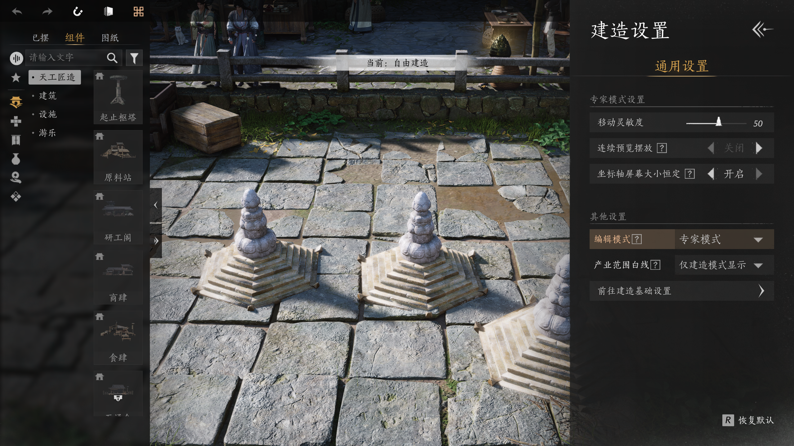
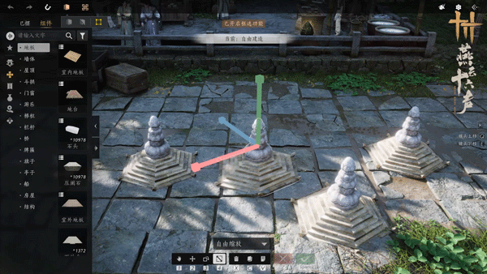
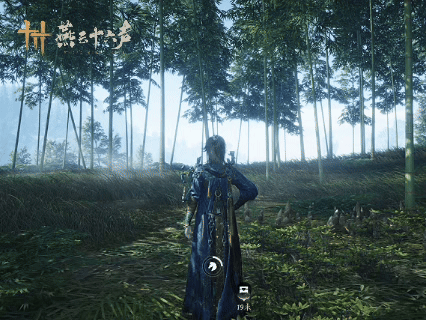
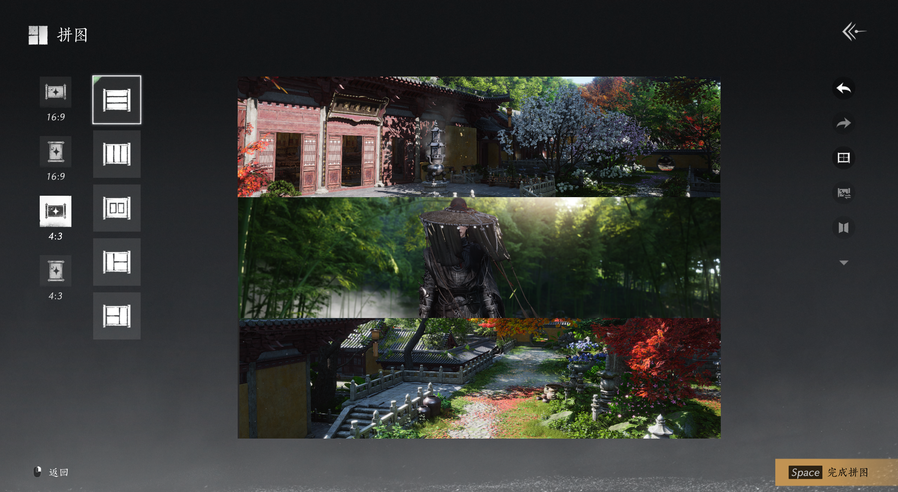

[소식] 대규모 최적화 적용丨유파의 불편 요소 개선, 동맹 콘텐츠 개편!
무술 밸런스와 유파별 전투 불편 사항을 개선하고, 장비 육성·동맹 콘텐츠를 개편합니다. PC·모바일 설치 용량 최적화 계획도 공개했습니다.
산비가 다가오면 낙엽이 가을을 알립니다. 새 버전 「잔잔한 물결에 풍파가 일다」가 시작되었습니다. 500분이 넘는 방대한 스토리 콘텐츠, 항저우 지역 완전체, 신규 우두머리와 신규 수호 콘텐츠, 새로운 친구까지…… 온갖 선율을 귀 기울여 듣고, 다채로운 풍경을 앞으로 만나 보세요.
산들바람이 버드나무를 스치고 소년들이 만나는 가운데, 이야기는 평란서원에서 새로운 장을 엽니다. 연지도 먼저 길을 살피고 돌아와 학우들 사이의 이런저런 일을 그린 편지 한 통을 전했습니다.
*이 영상은 스토리 콘셉트 예고일 뿐이며, 자세한 내용은 게임 내 체험을 기준으로 합니다.
대규모 콘텐츠 업데이트와 함께 설치 용량 부담 완화도 계속 진행
이번 업데이트에는 많은 신규 콘텐츠와 플레이 방식 개선이 포함되어 있어 일정 용량의 업데이트 데이터를 다운로드해야 합니다. 하지만 협객 여러분은 걱정하지 않으셔도 됩니다. 설치 용량 최적화도 안정적으로 진행하고 있습니다—
설치 용량 부담 완화의 취지와 목표는 많은 콘텐츠를 계속 업데이트하면서도 설치 용량을 더 효과적으로 관리하는 것입니다.
올해 3월 체계적인 개선 작업에 착수한 뒤, 그래픽 품질을 전혀 떨어뜨리지 않고 PC 버전은 누적 약 100G, 모바일 버전은 약 20G를 줄였습니다. 앞으로도 설치 용량을 꾸준히 최적화해 협객 여러분의 저장 공간을 아끼겠습니다!
앞으로 설치 데이터를 더 최적화하고 분할할 예정입니다. 향후 협객 여러분은 이미 플레이했거나 자주 사용하지 않는 콘텐츠와 배경 데이터를 한 번에 빠르게 정리할 수 있습니다. 기존 용량의 50% 이하인 기본 콘텐츠만 다운로드해도 대부분의 콘텐츠를 즐길 수 있습니다. 설치 용량 부담을 줄이고 화면 표현을 개선하기 위해 계속 노력하며 더 많은 방법을 시도하겠습니다.
이야기의 자세한 내용은 협객 여러분이 직접 찾아가 체험해 보시기 바랍니다. 오늘 새 버전에는 협객 여러분께 더 나은 플레이 경험을 제공하기 위한 여러 주요 기능 최적화도 함께 적용됩니다—
불편 요소 개선으로 유파와 육성 경험을 함께 향상
앞서 항저우에서 협객 논검 간담회를 열어 일부 협객을 오프라인으로 초대하고 실전 경험을 직접 들었습니다. 이번 간담회 덕분에 협객들의 실전 경험을 더 직접적이고 깊이 있게 이해할 수 있었고, 많은 것을 배웠습니다. 앞으로도 간담회를 계속 열고, 데이터와 온라인 협객들의 의견을 함께 후속 무술 조정의 주요 평가 근거로 삼겠습니다.
선연마 모드의 데이터를 포함한 실시간 데이터와 협객들의 의견을 종합적으로 평가한 결과, 이번 업데이트에서 무술 밸런스 조정이 정식 적용됩니다. 지과 관련 조정 내용은 「연지 속보」 짧은 영상으로도 준비했습니다. 기획자가 협객 여러분께 변경 방향을 더 직관적으로 설명하고 보여 드리니, 아래 영상을 확인해 주세요—
앞으로 새로운 유파 2가지가 차례로 등장합니다. 하나는 창 무술 2세트로, 다른 하나는 곤법과 횡도 무술으로 구성됩니다. 새로운 강호의 무공이 다가오고 있으니 기대해 주세요!
아울러 협객 여러분이 집중적으로 제보한 불편 사항도 이번 업데이트에서 중점적으로 개선했습니다. 멀티 BOSS 콘텐츠에서 네트워크 지연이 기술 사용에 영향을 주는 문제, 일부 유파의 기술과 기술 연계가 쉽게 끊기는 문제, 일부 유파 전용 세트의 성능이나 적용 범위가 부족한 문제 등이 포함됩니다. 성과 지표가 기대에 미치지 못하거나 플레이 경험을 더 다듬을 필요가 있는 유파도 맞춤 조정했으니, 접속해 체험해 보세요!
이 밖에도 육성 경험을 개선하는 여러 항목이 포함됩니다:
• 통보의 주간 교환 한도를 없앴습니다. 특정 통보가 부족하면 다른 통보를 사용해 빠르게 보충할 수 있습니다.
• 초기 옵션 저장소 최적화: 금색 옵션 출현 확률이 상승합니다. 무기 「최대 외공 공격」, 「최소 외공 공격」의 확률이 상승합니다. 정강이·손목 부위에서는 「내공」, 「정확도」, 「치명타 확률」, 「외공 방어력」의 확률이 상승하고, 「체력」은 제거되며 「각성 확률」의 확률은 낮아집니다.
• 해금한 세트 무료 전환으로 장비 하나를 여러 유파에서 사용할 수 있습니다.
• 조율 옵션 목록을 간소화하고, 단일 대상 비결과 다수 대상 비결의 피해 증가 옵션을 「전체 비결 피해 증가」로 통합했습니다.
• 조율 옵션 저장소를 최적화했습니다. 「최대 외공 공격」, 「최소 외공 공격」 및 피해 증가·효과 증가 계열 옵션의 출현 확률이 상승하고, 「최소 속성 공격」과 「최대 속성 공격」의 출현 확률은 낮아집니다.
• 모든 장비의 「조율 초기화」와 「전율 수정」 재사용 대기시간이 3일로 줄어듭니다.
……
더 자세한 변경 내용은 협객 여러분께서 전체 공지에서 확인해 주세요.
함께 보물나무를 가꾸고, 동맹 명예 체계를 개편
강호를 멀리 나아가다 보면 동료를 만나는 일이 가장 소중합니다. 동맹 협객 사이의 우정에 더 구체적인 의미를 부여하고, 모두가 “함께 나무를 심고 함께 결실을 누리는” 협력과 수확을 더 잘 느끼도록 동맹 명예 체계를 크게 개편했습니다.
동맹 번영도가 시즌제 「재물 나무」 육성 체계로 새롭게 바뀝니다. 협객은 다양한 동맹 활동에 참여해 성장치를 얻고, 동료들과 함께 재물 나무를 가꾸며 레벨을 올릴 수 있습니다.
재물 나무가 자라면 동맹 구성원은 「개지산엽」에 참여해 【은백엽】을, 동맹은 【금백엽】을 획득해 각 상점에서 보상으로 교환할 수 있습니다. 레벨에 따라 「보수 가상지」도 차례로 해금됩니다. 여기에는 첫 멀티플레이 결산 연출, 막 연출, 다인 대기 자세, 신규 【동맹 협객 명패】 등 풍성한 보상이 포함되며, 동맹이 자율적으로 배분합니다. 다인 대기 자세와 【동맹 협객 명패】는 재물 나무 레벨에 따라 효과도 향상됩니다.
매주 월요일 오전 5시에 보상 풀의 일부 보상은 관리자와 지난주 활동도 순위가 높은 구성원에게 자동 배분되며, 나머지 보상은 동맹 관리자가 배분할 수 있습니다. 모든 보상은 획득 후 1주 동안만 유효하며, 다음 주 월요일 오전 5시에 자동으로 만료됩니다.
이 밖에도 「동맹-적금 소점」에 여러 상품이 새로 추가되며, 보상 획득 조건도 함께 완화됩니다. 협객 여러분께서는 방문해 확인해 주세요.
동맹 시스템에도 여러 개선 사항이 적용됩니다. 최대 5명이 함께 화면에 등장할 수 있는 특수 구성 요소 【풍운벽】 추가, 사용자 지정 방에 친구를 초대해 함께 플레이하는 기능, 동맹 소개 화면 개선과 신규 이용자 보호 기능 추가 등이 있습니다. 이 변경으로 동맹에서의 만남이 더 활기차고 함께하는 여정이 더 순조로워져, 협객 여러분이 뜻을 같이하는 벗을 찾을 수 있기를 바랍니다.
협객의 길은 외롭지 않도록, 우선 선정 노패를 오래 보존
강호를 누비다 보면 때맞춰 놓인 노패 하나가 협객의 눈앞에 드리운 안개를 걷고 앞길을 가리켜 주곤 합니다. 서로 만난 적이 없어도 마음이 통하고 의리로 도울 수 있습니다.
협객 여러분의 정성이 오래 남고 좋은 길표가 더 많은 후배에게 도움이 되도록 이번에 길표 시스템을 중요하게 업데이트했습니다.
이제 시스템은 노패의 실제 내용과 인기를 기준으로 주기적으로 【우선 선정 노패】를 선정하고, 그 보존 기간을 크게 늘립니다. 우선 선정 노패 자격을 계속 유지하면 【정선 노패】로 선정될 수 있으며, 이 경우 사라지기까지 남은 시간의 카운트다운이 멈춥니다.
또한 좋은 노패와 그 제작자에게 더 많은 혜택을 제공할 예정입니다. 「채팅-알림-내 노패」에 「연도 일람」 콘텐츠를 추가해 품질이 좋고 인기가 높은 노패를 정기적으로 소개하고, 정성을 들인 콘텐츠를 더 많은 협객에게 보여 줍니다. 협객 여러분은 매일 방문해 목록을 새로고침할 수 있으며, 관심 있는 콘텐츠를 만날지도 모릅니다. 노패 제작자를 팔로우하고 그 사람의 노패 페이지에서 게시한 모든 노패를 확인할 수도 있습니다. 노패를 통해 충분한 관심을 받고 우선 선정 노패를 일정 수 보유하면 풍성한 보상을 받을 수 있습니다.
길표 하나에 입력할 수 있는 글자 수도 120자로 늘려 협객이 더 많은 정보를 남길 수 있습니다. 마음에 드는 길표 종류가 있다면 「설정-소셜-길표 설정-길표 내용 선호 설정」에서 선호도를 조정해 여정에서 만나는 내용을 취향에 맞게 바꿀 수 있습니다.
도구를 먼저 갖추다, 건축 전문가 모드 적용
일을 잘하려면 먼저 도구를 다듬어야 합니다. 협객 여러분이 머릿속 영감을 더 잘 구현할 수 있도록 건축 시스템에 「전문가 모드」를 추가했습니다.
편의 모드에 비해 전문가 모드는 더 집중된 작업을 지원하고 기능이 더 충실합니다. 협객은 「건축 설정-편집 모드」에서 편의 모드와 전문가 모드를 자유롭게 전환할 수 있습니다.

전문가 모드에서는 가업과 개인 가방이 통합되며, 구성 요소 분류도 기능과 모양에 따라 다시 세분화해 협객 여러분이 필요한 구성 요소를 더 빠르게 찾을 수 있습니다. 또한 전문가 모드에 실행 취소/복구 기능이 추가되어 일정 단계 이내의 건축 작업을 취소하고, 취소한 내용을 복구할 수 있습니다.

구성 요소 편집도 더 효율적으로 바뀝니다. 이동, 회전, 크기 조절 모드에서 구성 요소를 바로 끌어다 놓을 수 있으며, 이동 및 회전 모드에는 세계 좌표와 로컬 좌표 전환 기능이 추가됩니다. 오픈 월드에서는 구성 요소를 클릭하거나 여러 개를 드래그해 선택해 임시 그룹에 넣고, 함께 이동·회전·크기 조절하는 등 일괄 편집할 수 있습니다.
여러 가업에 걸친 구성 요소 관리도 개선됩니다. 협객은 주변에서 선택할 수 있는 가업을 직접 전환해 현재 건축 구역으로 지정하고 구성 요소를 바로 배치할 수 있어, 목표 가업까지 캐릭터를 이동할 필요가 없습니다. 배치한 구성 요소 목록에서 구성 요소를 빠르게 확인하고 위치를 찾거나 삭제하는 기능도 지원합니다.
기능 추가: 탈것 휠, 사진 콜라주
이번 업데이트에는 협객이 강호를 더 편리하고 쾌적하게 누비며 즐거움을 나눌 수 있도록 돕는 여러 기능 개선도 포함됩니다.
「의상 조합 휠」에 이어 이번에는 「탈것 휠」 기능을 추가했습니다. 협객은 【옷장-탈것 화면】에서 탈것 휠 설정 화면으로 들어갈 수 있습니다. 설정을 마친 뒤 「말 부르기 키」를 길게 눌러 탈것 휠을 열고 탈것을 빠르게 전환할 수 있습니다.

사진 촬영에 「콜라주」 기능이 추가됩니다. 협객은 앨범에서 사진 여러 장을 선택해 콜라주를 만들 수 있습니다. 콜라주를 만들 때 미리 설정된 템플릿을 선택하면 사진이 템플릿에 자동으로 들어가며, 사진을 끌어 위치를 바꾸거나 클릭해 다시 선택할 수 있습니다. 템플릿 안의 사진은 이동, 확대·축소, 회전, 좌우 반전이 가능합니다. 작업을 마치면 저장하고 공유할 수 있으며, 만상집 작품집으로 업로드할 수도 있습니다.

더 많은 개선 사항과 콘텐츠 업데이트는 협객 여러분께서 전체 업데이트 공지에서 확인해 주세요.
현재 협객 여러분이 제보한 일부 플레이 버그와 일부 캐릭터 모델이 비정상적으로 표시되는 문제의 원인을 확인했으며, 긴급히 개선하고 수정하고 있습니다. 플레이 중 문제가 발생하면 언제든 의견을 보내 주세요!
새로운 강호의 장에서 협객 여러분 모두 즐거운 마음으로 길을 나서 마음껏 강호를 누비시기를 바랍니다!